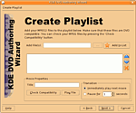

KDE DVD Authoring Wizard
Archivierte Anleitung
Dieser Artikel wurde archiviert, da er - oder Teile daraus - nur noch unter einer älteren Ubuntu-Version nutzbar ist. Diese Anleitung wird vom Wiki-Team weder auf Richtigkeit überprüft noch anderweitig gepflegt. Zusätzlich wurde der Artikel für weitere Änderungen gesperrt.
Zum Verständnis dieses Artikels sind folgende Seiten hilfreich:
KDE DVDAuthor Wizard  ist ein Assistent zur Erstellung einer DVD aus ein oder mehreren MPEG-2 Dateien. Es ist dabei so aufgebaut möglichst einfach in der Bedienung zu sein. Alles was man tun muss, ist eins oder mehrere Dateien in die Wiedergabeliste einzufügen und die weiteren Abfragen zu beantworten. Des weiteren ist es möglich ein DVD-Menü zu erstellen, das animierte Vorschaubilder der Dateien der Wiedergabeliste beinhaltet.
ist ein Assistent zur Erstellung einer DVD aus ein oder mehreren MPEG-2 Dateien. Es ist dabei so aufgebaut möglichst einfach in der Bedienung zu sein. Alles was man tun muss, ist eins oder mehrere Dateien in die Wiedergabeliste einzufügen und die weiteren Abfragen zu beantworten. Des weiteren ist es möglich ein DVD-Menü zu erstellen, das animierte Vorschaubilder der Dateien der Wiedergabeliste beinhaltet.
Weitere Funktionen:
DVD Menü mit mehreren Seiten
Animierte Vorschaubilder im Menü
Musikuntermalung ist möglich
Unterstützt Breitbild und Standard 4:3 Darstellung
ISO DVD Image Erstellung
MPEG2 DVD Kompatibilitäts Prüfung
Unterstützung von PAL oder NTSC Menüs
Installation¶
Vorbereitung¶

Für das Programm benötigt man folgenden Pakete die installiert [1] werden müssen:
konsole
kommander (universe, [2])
imagemagick
mjpegtools (multiverse)
sox (universe)
dvdauthor (universe)
mplayer (multiverse)
transcode (multiverse)
Paketliste zum Kopieren:
sudo apt-get install konsole kommander imagemagick mjpegtools sox dvdauthor mplayer transcode
sudo aptitude install konsole kommander imagemagick mjpegtools sox dvdauthor mplayer transcode
Zusätzlich sind noch die Pakete
xine-ui (universe)
k3b
empfohlen, damit die eingebaute Vorschau- und Brennfunktion zur Verfügung steht.
Installation¶
Nun wird die neuste Version auf der Download Webseite heruntergeladen und das Archiv entpackt [3]. Danach öffnet man den Konqueror und klickt die Datei Installer.kmdr doppelt an, somit wird das Programm systemweit installiert. Jetzt kann der KDE Authoring Wizard im Startmenü "Anwendungen -> Unterhaltungsmedien -> KDE DVDAuthor Wizard" gestartet werden. Der DVD Authoring Wizard ist im KDE-Menü unter "Multimedia" zu finden.
- Erstellt mit Inyoka
-
 2004 – 2017 ubuntuusers.de • Einige Rechte vorbehalten
2004 – 2017 ubuntuusers.de • Einige Rechte vorbehalten
Lizenz • Kontakt • Datenschutz • Impressum • Serverstatus -
Serverhousing gespendet von